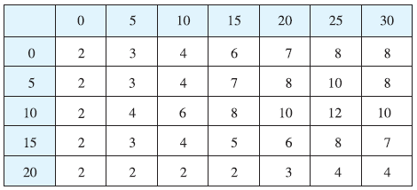

A 20-ft-by-30-ft swimming pool is filled with water. The depth is measured at 5-ft intervals, starting at one corner of the pool, and the values are recorded in the table. Estimate the volume of water in the pool. 